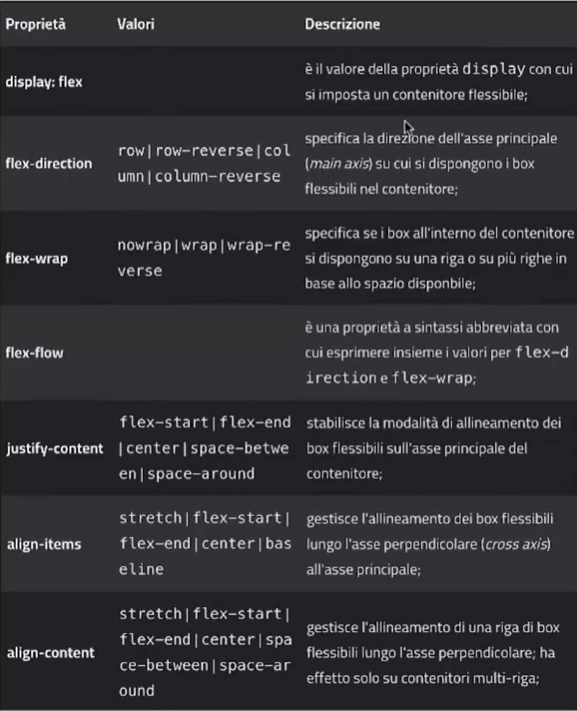
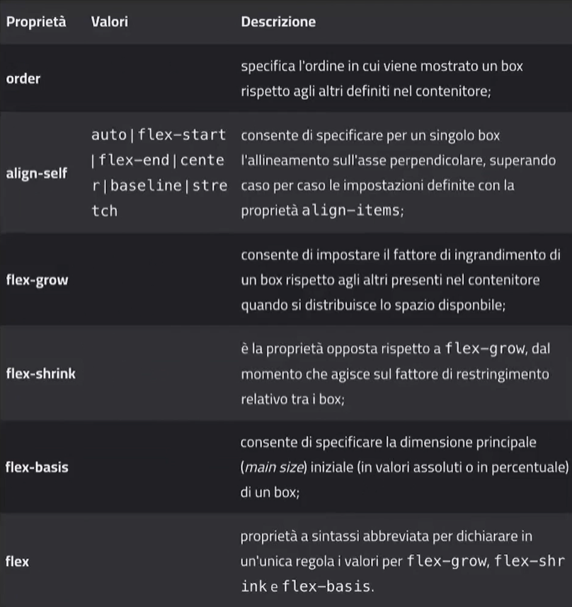

Flexbox è uno strumento di impaginazione. Si potrebbe dire che probabilmente è lo strumento principale di impaginazione nel web moderno. Nato per rispondere all'esigenza dei siti in mobile, è pensato alla base per essere responsive ready. È un sistema di disposizione monodimensionale, quindi lavora solo su asse x o y, di default flexbox lavora sull'asse x (quella orizzontale).
display: flex; è la proprietà che viene data a parent principale. Questo andrà ad
applicare il flex a tutti i children. Per cambiare la sua direzione (che di defualt è x), si
usa flex-direction: row(default) | column . L'asse principale si definisce
main axis quella opposta e "secondaria" viene chiamata
cross axis. Per decidere come si comportano i children nel contenitore quando
quest'ultimo si rimpicciolisce o non basta lo spazio è
flex-wrap: no-wrap (default) | wrap | wrap-reverse.
FLEX-DIRECTION: row posiziona gli item in orizzontale di default da sinistra
verso destra.
FLEX-DIRECTION: column posiziona gli item in verticale di default dall'alto verso
il basso.
FLEX-WRAP: no-wrap (default) | wrap | wrap-reverse decide come gli elementi
interni si comportano quando il contenitore genitore non è abbastanza grande o si restringe.
con wrap si intende il "rompre la riga" in caso di necessità.
Esistono poi justify-content: e align:items.
justify-content serve per gestire lo spazio sulla main axis, mentre
align-items allinea i contenitori sulla cross axis.
JUSTIFY-CONTENT: flex-start | space-between | space-around | space-evenly
ALIGN-ITEMS: flex-start | stetch (default) | flex-end
ALIGN-CONTENT: permette di allineare mutipli oggetti su più righe

ORDER: Funziona solo per i singoli elementi e gestisce il modo in cui vengono
"disegnati" sulla pagina. Usa valori con numeri interi sia negativi che positivi.
FLEX-GROW: | FLEX-SHRINK: viene usato per far crescere un singolo elemento
andando ad occupare lo spazio vuoto rimanente all'interno del parent.
